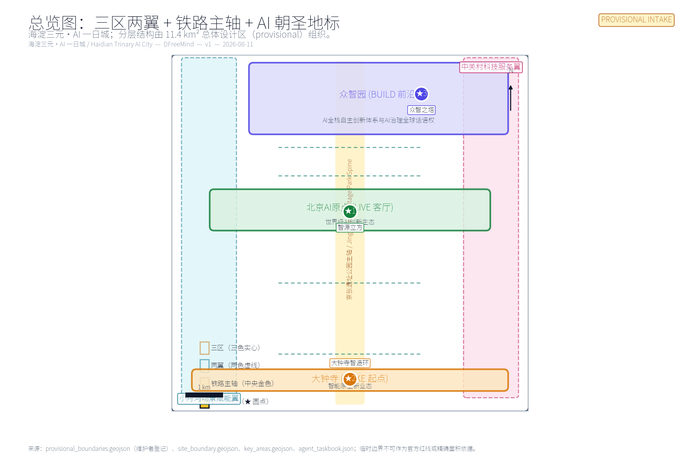
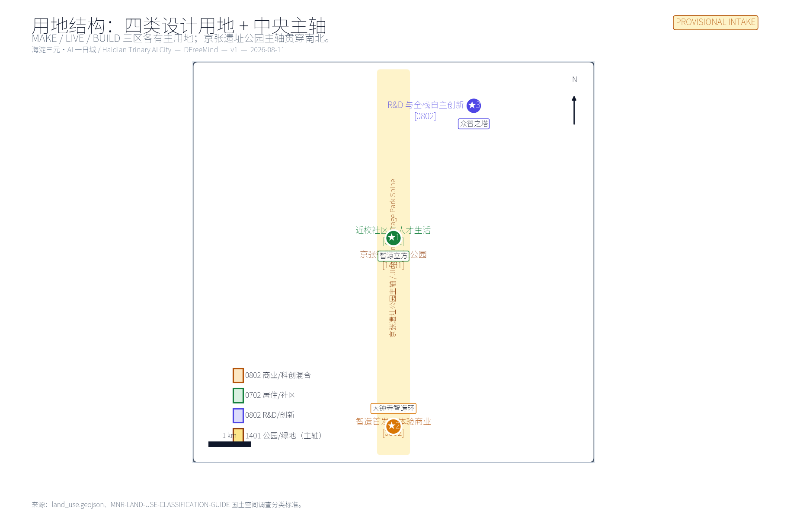
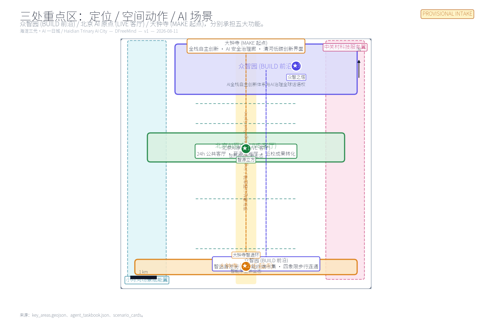
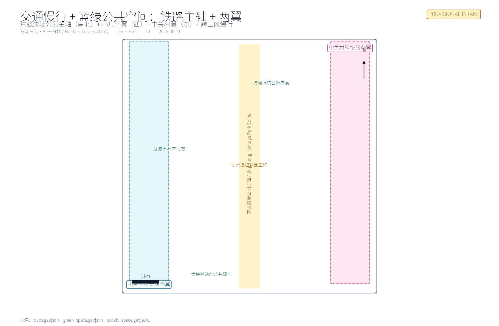
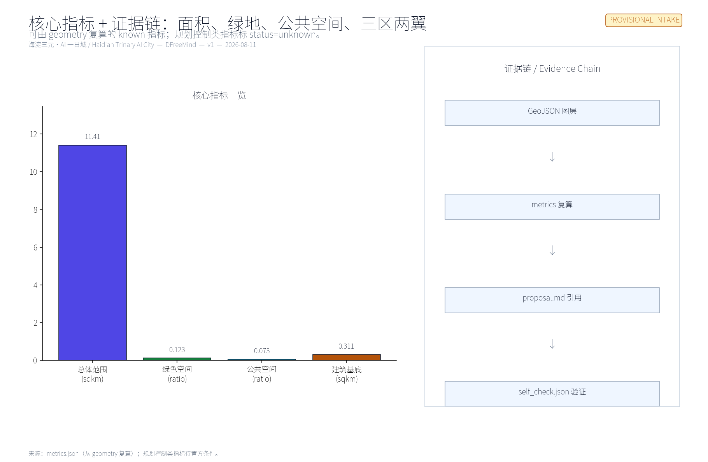

Haidian Trinary AI City
Direction B — Haidian Trinary AI City. The 11.4 km² overall design area is organised as three continuous phases of a single AI-citizen day: MAKE (Dazhongsi) / LIVE (AI Origin) / BUILD (Zhongzhiyuan). Two wings — Xiaoyuehe Scenario Empowerment (west) and Zhongguancun Technology Service (east) — carry the five functions. All layers and metrics are recomputed from GeoJSON; all spatial suggestions are concept proposals, not regulatory plans, not redlines, and not implementation commitments.
Haidian Trinary AI City
Direction B — Treat the 11.4 km² overall design area as a 24-hour life laboratory for an AI practitioner. The three key areas are not three isolated parks; they are three consecutive phases of one day: make in the morning (Dazhongsi) → live and collaborate at noon (AI Origin) → build and govern in the evening (Zhongzhiyuan). The west wing (Xiaoyuehe Scenario Empowerment) carries "AI+ scenarios"; the east wing (Zhongguancun Technology Service) carries "global element allocation".
0 · Design basis and source inventory
This formal submission takes the Prequalification Announcement of the Centennial Jing-Zhang AI Innovation Belt Urban Design International Open Call issued by the Haidian Branch of Beijing Municipal Commission of Planning and Natural Resources (2026-05-09) as the first-order source Source, and the machine-readable artefacts in brief/site-package/ (design_brief.json, agent_taskbook.json, allowed_design_space.json, sources.json, enums/, ranges/, schemas/, data/source_registry.json, data/processed/agent_fact_pack.md) as the auditable substrate Source Source Source.
data/source_registry.json lists 8 sources: 7 formal-usable, 1 background, 1 provisional. We use official_public and user_provided_cleared sources for formal claims, and provisional_repository_data for the temporary boundary and geometry. Background-only, provisional-only, and needs-official-file material is not promoted into formal conclusions Source.
The announcement and taskbook call for "urban-design depth equivalent to regulatory detailed planning" and "urban-design depth equivalent to comprehensive plan implementation" Standard Standard. We use "concept proposal / reference scheme / for professional teams to deepen" as the uniform wording boundary; this submission does not replace formal planning, does not constitute government approval, and does not overstep statutory review Standard.

0.1 Three scope levels and three key areas
The announcement allocates 43.6 km² as coordinated research scope, 11.4 km² as overall design scope (where this submission's primary layers live), and 368.4 ha as key detailed-design scope (three detailed design districts). The three key districts enter this submission as provisional polygons and must be marked "pending official data" Spatial data Spatial data Spatial data。 Spatial data Metric Metric。 Depth.
0.2 Boundary and data status
The intake-readiness state of this scaffold is: provisional boundary, precision warning retained, recalculation pending official data release; intake scoring not blocked. When official SITE_BOUNDARY and three KEY_AREA polygons are published, site boundary, key areas, land use, buildings, roads, green space, public space, phasing, and metrics must be regenerated via scripts/scaffold_ai_submission.py; single-file replacement is not acceptable Spatial data Depth.
1 · Three positionings · Five functions · Three zones two wings
1.1 Three positionings Source
| Positioning | How it lands in the Trinary |
|---|---|
| Centennial Jing-Zhang Cultural Belt | The Jingzhang heritage park spine runs N-S through all three zones: "1909 industrial first line → present AI first line" continuity |
| Urban AI Life Experience Belt | LIVE Living Room (AI Origin) 24h public living room + the two wings' scenario nodes form "daily, experienceable AI" |
| AI Convergence Innovation Belt | BUILD Frontier (Zhongzhiyuan) full-stack innovation + MAKE Origin (Dazhongsi) smart-native new business forms together form "industrially actionable AI" |
1.2 Five functions Source
- Full-Stack AI Independent Innovation System → BUILD Frontier (Zhongzhiyuan)
- World-Class AI Innovation Ecosystem → LIVE Living Room (AI Origin Community)
- AI+ Scenario Empowerment New Paradigm → Xiaoyuehe Scenario Empowerment Wing (west) + cross-zone nodes
- Smart AI Vibrant City → LIVE Living Room (24h) + adjacent community services
- Global AI Governance Discourse Power → BUILD Frontier (Zhongzhi Tower + AI Safety Governance Gallery)
1.3 Three zones two wings coordination loop
| Node | Role | Core moves | Evidence |
|---|---|---|---|
| Zhongzhiyuan AI Acceleration Area (192.1 ha) | BUILD Frontier · full-stack + governance | R&D block, Qinghe low-carbon innovation edge, Zhongzhi Tower | Spatial data Depth |
| Beijing AI Origin Community (104.3 ha) | LIVE Living Room · world-class ecosystem | 24h public living room, open-source release hall, near-campus translation | Spatial data Source |
| Dazhongsi AI Industry Cluster (72.0 ha) | MAKE Origin · smart-native new business forms | Debut street, smart-terminal market, 4-quadrant public living room | Spatial data Metric |
| Xiaoyuehe Scenario Empowerment Wing (west) | Scenarios & vibrant city | AI+ block pilots, low-carbon energy, walkability seam | Spatial data Spatial data |
| Zhongguancun Technology Service Wing (east) | Elements & capital | Compact governance for capital / IP / talent / data | Spatial data Spatial data |


2 · Overall design scope — urban renewal at regulatory-plan urban-design depth
The 11.4 km² overall design scope uses continuity as the renewal principle; it does not win by isolated demolish/keep decisions Standard Standard Depth。 Depth:
1. Central spine = Jingzhang Heritage Park: from 1909 rails (railway memory) to the AI public living room (Zhiyuan Cube), N-S continuity, forming "1909 industrial first line → present AI first line" continuity narrative. 2. Two wings = Scenarios + Services: West wing Xiaoyuehe runs "AI+ block" pilots; east wing Zhongguancun runs "IP+ capital + talent" element allocation. The two wings do not draw new red lines; they are stitched by walkability, green space, and public space. 3. Three zones = three rhythms: MAKE is the debut and manufacturing end (fastest tempo); LIVE is the 24h public living room (gentle tempo); BUILD is R&D and governance (slowest tempo). The three rhythms are linked by a "morning → noon → evening" path within the same day.
Land use fully covers the boundary without overlap Spatial data Spatial data Spatial data。 Spatial data; building footprints are tiered as keep / renovate / pilot-new [data:geometry/buildings. geojson#BLDG-MAKE-01] Spatial data Spatial data。 Depth; transport is structured as Jingzhang spine + two wings + cross-trinary walkability Spatial data Spatial data Spatial data。 Depth; municipal and public services follow "public space first, light facilities early, formal engineering preconditions documented" Spatial data Depth.

3 · Key area detailed design
3.1 Dazhongsi AI Industry Cluster — MAKE Origin
Positioning: debut field for smart-native new business forms. Spatial moves: 4-quadrant walkability around the rail station; station-front public living room as a reusable debut venue; renewal runs in lockstep with anchor-firm public environment upgrades Spatial data Spatial data. AI scenarios: debut street, smart-terminal market, data-element theatre, 4-quadrant public living room (scenarios 01, 02). Implementation dependencies: rail-station integration, road intersections, municipal utilities Spatial data. Risk: complex ownership and commercial interface around the station; pilot should go "light first, then heavy", avoiding one-shot large-scale renovation.
3.2 Beijing AI Origin Community — LIVE Living Room
Positioning: 24h public living room for a world-class AI innovation ecosystem. Spatial moves: Zhiyuan Cube as the 24h public living room; near-campus translation street sews campus / park / block walkability together; AI life-service sample street lands AI+ public services at block scale Spatial data Spatial data Spatial data。 Spatial data. AI scenarios: 24h public living room, open-source release hall, talent life concierge, near-campus translation, AI life-service sample street (scenarios 03, 04, 05, 07). Implementation dependencies: campus boundaries, ownership, ground-floor mix. Risk: life-style blocks are sensitive to over-monitoring and over-commercialisation; every scenario must keep human-service and accessibility fallbacks Standard Standard Standard.
3.3 Zhongzhiyuan AI Acceleration Area — BUILD Frontier
Positioning: full-stack independent innovation + global AI governance discourse. Spatial moves: R&D block + Zhongzhi Tower as the governance showcase and collaboration node; Qinghe low-carbon innovation edge hosts low-carbon energy, distributed energy and edge-compute stops; ecology and flood-control conditions reviewed against Qinghe interface Spatial data Spatial data Spatial data。 Spatial data. AI scenarios: urban-agent sandbox, AI safety governance gallery, low-carbon compute stop (scenarios 06, 08, 11). Implementation dependencies: blue line, energy, compute, operating entity. Risk: governance narrative easily slips into sloganeering; it must be carried by visitable, bookable, supervised "standards + safety evaluation + model red team" nodes.
4 · AI innovation ecosystem, talent profiles, AI+ scenarios
4.1 Global case translation Source Depth
| Case | Geography | Focus | Translation to the Trinary |
|---|---|---|---|
| Silicon Valley–Stanford Corridor | San Francisco Bay Area, US | University → capital → firms → public oversight as a continuous translation | Compact governance across three zones two wings; avoid "after-the-fact oversight" |
| Boston Kendall Square | Cambridge, MA, US | University + lab + startup + public-space four-fold mixed block | LIVE Living Room 24h public living room |
| London Knowledge Quarter | Bloomsbury–Kings Cross, London, UK | University + cultural + startup + public space, governed by compact | Zhongguancun Technology Service Wing compact governance |
| Tel Aviv Startup Nation | Tel Aviv, IL | Defence-tech spillover + cross-border capital + international talent | Talent visa and cross-border elements for LIVE and BUILD |
| Seoul Gangnam SandBox | Gangnam, Seoul, KR | District-led industry test scenarios + public space | MAKE Origin (debut street) + LIVE industrial testing |
| Shenzhen Nanshan–Futian–Luohu AI+ Chain | Shenzhen, CN | Manufacturing–scenario–policy chain deployment | MAKE Origin's manufacturing–scenario chain |
| Bangalore Whitefield IT Corridor | Bangalore, IN | Outsourcing base → local ecosystem progressive transition | Trinary's progressive phasing |
| Toronto MaRS Discovery District | Toronto, CA | Hospital + university + startup + public-space four-way collaboration | AI+ public health scenarios as a first-launch model |
4.2 User personas (5 classes) Source Depth
| Persona | Primary needs | Spatial response | Self-check boundary |
|---|---|---|---|
| Open-source developer | release, collaboration, testing, community reputation | Zhiyuan Cube 24h living room, open-source release hall, night-collaboration space | No individual tracking; activity data aggregated Standard |
| Startup team | low-cost office, compute access, product test bed | Debut street (debut space), Zhongzhiyuan R&D block, edge-compute stop | Compute and data services need separate authorisation |
| Enterprise visitor | showcase, business, international hosting, talent recruiting | Dazhongsi smart-terminal market, ZGC Service Wing international roadshow | Corporate marks, case studies, activity data rights-cleared |
| University faculty & students | translation, cross-school collaboration, daily walking | Near-campus translation street, campus-to-park walkability seam, AI education experience | Campus data and research outputs authorised; commercialisation path designed separately |
| Existing residents | commute, leisure, community services, low-disturbance renewal | Jingzhang park walk loop, community service inlay, tiered night activity | Resident profiles not used for commercial targeting; human-service fallback retained Standard Standard |
4.3 10 AI scenario cards Source Depth
| # | Scenario | Zone | Spatial carrier | Notes |
|---|---|---|---|---|
| 01 | Debut Street | MAKE | Dazhongsi Debut Loop | First-launch / first-store / first-exhibit for smart agents, smart terminals, content-consumption firms Spatial data Spatial data |
| 02 | Smart-Terminal Market | MAKE | Dazhongsi Station 4-Quadrant Public Living Room | Links the debut loop to daily retail, media launch and cultural events Spatial data |
| 03 | AI Origin 24h Public Living Room | LIVE | Zhiyuan Cube | 24h open, switchable between near-campus offices, open-source collaboration, talent life, street exhibitions Spatial data Spatial data |
| 04 | Open-Source Release Hall | LIVE | Near-Campus Translation Street | Result release, model evaluation, small launch events Spatial data |
| 05 | Talent Life Concierge | LIVE | AI Life-Service Sample Street | AI+ block-scale services (health/education/legal/living-payment) with human fallback |
| 06 | Urban-Agent Sandbox | BUILD | Zhongzhiyuan R&D Block | Controllable traffic/operations/service agent tests; auditable, interruptible Spatial data |
| 07 | Near-Campus Translation | LIVE | Near-Campus Translation Street | Incubation / showcase / legal / IP / financing Spatial data |
| 08 | AI Safety Governance Gallery | BUILD | Zhongzhi Tower | Standards + safety evaluation + model red team as visitable, bookable nodes Spatial data Spatial data |
| 09 | Qinghe Low-Carbon Innovation Edge | BUILD | Qinghe low-carbon edge + blue line | Distributed energy + edge compute + public service integration Spatial data |
| 10 | Global AI Activity Week | X | Belt public-space system | Walkable, broadcastable experience route across three zones; actual events follow operator's annual plan |
4.4 Three industry test scenarios Source Depth
| # | Scenario | Anchor | Data / boundary | Operator |
|---|---|---|---|---|
| TS-1 | Urban-Agent Sandbox | Zhongzhiyuan R&D Block | Public + temporary-authorised data; no personal privacy access | Zhongzhiyuan R&D block operator (TBD) |
| TS-2 | AI+ First-Launch Scenario Validation | Debut Street | On-site + merchant-authorised; anonymous users | Dazhongsi station operator (TBD) |
| TS-3 | AI Life-Service Block Trial | AI Life-Service Sample Street | Authorised service data + supervision log | Block operator (TBD) |
5 · Land use, building, retain/renovate/demolish, transport, municipal, character
5.1 Land use
Land use follows Standard and fully covers the boundary without overlap Spatial data Spatial data Spatial data。 Spatial data Depth.
5.2 Building scale and retain/renovate/demolish logic
Buildings are tiered as keep / renovate / pilot-new; we do not advocate one-shot large-scale demolish/keep. Footprint area is recomputed from metrics.json Spatial data Spatial data Spatial data。 Spatial data Spatial data Metric。 Depth Depth.
FAR, building height, building density, setbacks and building control lines are marked status=unknown per Standard and recalculated after official conditions are supplied Metric Depth.
5.3 Transport
Transport is structured as Jingzhang spine + two wings + cross-trinary walkability Spatial data Spatial data Spatial data。 Spatial data Spatial data Depth. Parking and non-motorised transport follow "rail-station priority + public-space embedded"; specific supply awaits official conditions.
5.4 Municipal and public services
Municipal, new infrastructure, distributed energy, edge compute, and traditional public services are integrated under a "light, auditable, interruptible" piloting principle Spatial data Depth. Pipelines, energy, drainage, flood control, and fire-protection engineering data are registered as pending per A-CONTROLS-001.
5.5 Blue-green and public space
Blue-green space uses the Jingzhang heritage park spine as the skeleton, layered with community parks and public living rooms within the three key zones Spatial data Spatial data Spatial data。 Spatial data Depth Metric. Public space is tiered as "24h public living room + debut loop + governance plaza" Spatial data Spatial data Spatial data。 Spatial data Metric.
5.6 City character and AI pilgrimage landmarks
City character integrates Jingzhang railway history, Zhongguancun innovation culture, and AI new culture Depth Depth. The three AI pilgrimage landmarks are:
1. Zhiyuan Cube (LIVE) — 24h public living room and AI Origin community hall Spatial data Spatial data. 2. Dazhongsi Smart-Manufacturing Loop (MAKE) — debut loop and 4-quadrant public living room Spatial data Spatial data. 3. Zhongzhi Tower (BUILD) — R&D block and AI safety governance gallery Spatial data Spatial data.
All brands, fonts, images, portraits, and corporate marks must be rights-cleared Standard.
6 · Renewal projects, phasing, policy
| # | Project | Type | Primary dependency | Evidence |
|---|---|---|---|---|
| JZ-01 | Jingzhang heritage park walkability seam | public space / transport | road redline, under-bridge space | Spatial data |
| JZ-02 | Zhongzhiyuan Qinghe innovation edge | blue-green / industry display | blue line, ecology, flood control | Spatial data |
| JZ-03 | AI Origin near-campus translation street | urban renewal / industry services | campus boundary, ownership, ground-floor mix | Spatial data |
| JZ-04 | Dazhongsi station 4-quadrant walkability | rail integration / walkability | rail station, road intersections, municipal | Spatial data |
| JZ-05 | AI public service + edge-compute nodes | new infrastructure / public services | energy, compute, safety, operating entity | Spatial data |
| JZ-06 | Global AI Activity Week public route | operations / branding | public-space permit, event safety, rights clearance | Spatial data |
Phasing uses "light first, then heavy" as the unified principle Depth:
- PHASE-001 (MAKE launch + pilot) Spatial data: Dazhongsi debut street + edge-compute pilot + Global AI Activity Week route (2026–2027 pilot).
- PHASE-002 (LIVE living room + mid-section seam) Spatial data: Zhiyuan Cube 24h public living room + near-campus translation street + Jingzhang mid-section seam (2027–2029 mid-section).
- PHASE-003 (BUILD frontier + northern extension) Spatial data: Zhongzhiyuan R&D block + Zhongzhi Tower + Qinghe low-carbon innovation edge (2029+ northern extension).
7 · Metrics, area recomputation, compliance matrix

Metric recomputation Depth:
- Class 1 — spatial metrics recomputable from submitted geometry: boundary area, green ratio, public space ratio, building footprint area, phase area. All recomputed from GeoJSON Metric Metric Metric。 Metric Metric.
- Class 2 — control metrics requiring official regulatory or taskbook attachments: FAR, building height, building density, setbacks, road redlines, facility standards. All
status=unknownMetric Depth. - Class 3 — performance metrics requiring continuous operation/industry data calibration: AI innovation index, talent density, industry-service satisfaction, walkability accessibility, event participation, scenario usage frequency. Left to the operator and professional teams.
The compliance matrix covers all required tasks in announcement 1.3/1.4/1.5 and agent.1–agent.6 in agent_taskbook.json Standard Standard. This section is the prose summary; complete mapping is in compliance_matrix.json; standards coverage in standard_matrix.json; design depth in design_depth_matrix.json.
8 · Long-term operation, global events, developer community
| Dimension | Content | Frequency / owner | Evidence |
|---|---|---|---|
| Annual events | Global AI Activity Week, developer festival, scenario open day, industry debut season | annual / quarterly operator | Spatial data Depth |
| Brand | Trinary + Jingzhang + AI triplet of brand words + visual system Source | ongoing | Depth |
| Developer community | Open-source release hall + model evaluation + public-data sandbox | ongoing | Spatial data Depth |
| Scenario opening | Debut / agent sandbox / life-service sample | quarterly | Depth |
| City experience | Global AI Activity Week public route | annual | Depth |
| International communication | Storyline + city character + city landmarks | ongoing | Depth |
| Conversion pathway | Public living room → public activity → industry test → formal operation | ongoing | Depth |
Operating subjects, frequencies, responsibility boundaries, conversion paths and risks are all in the table. No "government commitment / confirmed event / confirmed investment" narrative enters formal conclusions Standard.
9 · Risk, copyright, compliance
- Official data gap: Until official
SITE_BOUNDARYand threeKEY_AREApolygons are published, this submission usesprovisional_boundaries.geojson; it must not be used as a formal professional scoring or approval basis Spatial data Spatial data Spatial data。 Spatial data Depth. - Concept-proposal boundary: All spatial suggestions are stated as "concept proposal / reference scheme / for professional teams to deepen"; they do not replace formal planning, do not overstep government approval, and do not bypass statutory review Standard.
- Data compliance: Public-space scenarios strictly follow Standard Standard Standard; no individual tracking; no resident-profile commercial targeting.
- Copyright and clearance: All images, fonts, trademarks, portraits, corporate marks, and academic figures must be rights-cleared Standard.
- HTML offline requirements:
visual/index.htmlandreport/proposal.htmlmust not load CDN, remote map tiles, external scripts, external fonts, iframe, form submissions, or external APIs.
References
- Source Haidian Branch of Beijing Municipal Commission of Planning and Natural Resources, Prequalification Announcement of the Centennial Jing-Zhang AI Innovation Belt Urban Design International Open Call (2026-05-09).
- Source
brief/site-package/agent_taskbook.json(2026-05-18 excerpt). - Source
brief/site-package/(design_brief / agent_taskbook / allowed_design_space / sources / enums / ranges / schemas / standards). - Source
data/source_registry.json(2026-08-09 maintained). - Source
data/processed/agent_fact_pack.md(registered reading-navigation layer). - Full machine index:
sources.json/metrics.json/compliance_matrix.json/standard_matrix.json/design_depth_matrix.json/self_check.json/geometry/*.geojson.